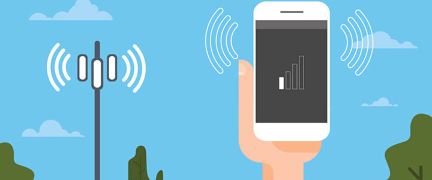
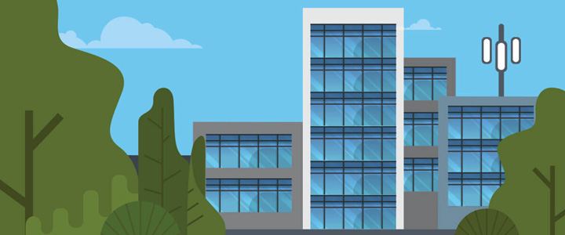
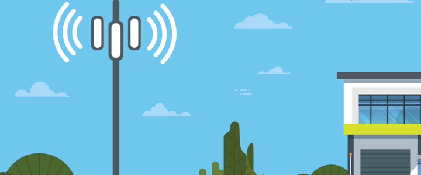
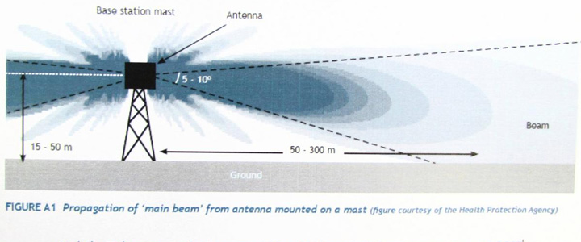
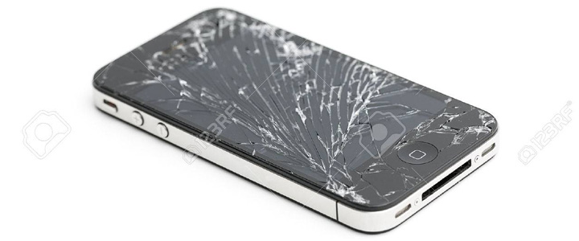
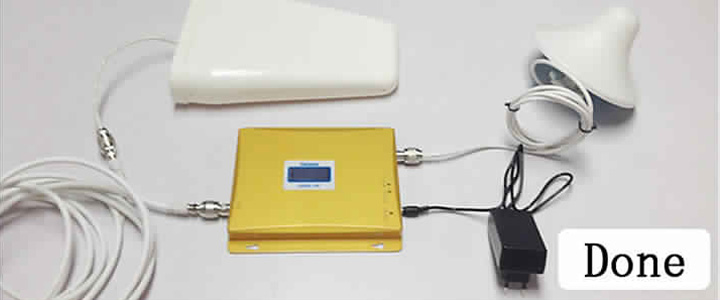

Today more than one Smartphone is being used all over India and that number is expected to double in the next 2 years, because mobile phones have become an essential requirement in everyday life of every man nowadays. People rely heavily on cell phones to stay connected to each other as cell phones enjoy text messages, email access, web searching, and video chatting on social media sites. This is possible only when the cell phone signal is strong and there is no problem of call dropping at all.
In a study done by the Department of Telecommunications, it was found that about 32 percent people are worried about the call drop problem, this number is very high and it is very frustrating. When the Department of Telecommunications asked the telecommunications companies the reason for this, the telecom companies said in response that nowadays the problem of call drop is increasing day by day due to the installation of too many signal receivers. Despite this, people are troubled by the call drop problem and they have not found any solution to this problem yet. Should people give up the cell phone due to call drop or is there some remedy for this, which they need to do. Let's talk about it.

Reason for Call Drop
Based on the reason given by telecommunication companies for the reason of call drop problem, it has been found that the problem of call drop is increasing day by day mainly due to the presence of too many receivers or due to the temporary environment and high building. Let us examine these traps in depth and find solutions.

1. Tower Hand-off Problems
The mobile network is transmitted by multiple towers to connect phone calls. Calling on the phone is possible only when the cell phone is connected to the nearest tower and communication with that tower continues smoothly, then clear call is possible. If there is a tie between the signal tower and the mobile network, a call drop may occur.

2. Distance from Cell Towers
Even today there exist many areas in India where cell towers have not yet been installed, as there is very little resident and the area is located on a rural area away from the city. If there is a rural area which is located at a greater distance from the cell tower, then show there is no signal. If there is no signal at all in the mobile, then there will be a problem of call drop, so people should make their house closer to the cell tower, so that the network coverage can reach their house completely.
Desert areas are excellent examples for this, where you do not get any signal at all. Nowadays, even in very densely populated cities, due to the decrease in the number of towers, proper coverage is not being reached, for which people are thinking to install mobile signal boosters.
If the digital cell phone signal on your mobile becomes too weak and enough data is lost in transit, chances are that your connection is terminated and the call drops, even if your phone shows a signal bar.

3. Damaged Mobile Phone
Finally, your cell phone may also be the cause of a call drop. If your cell phone is very old or damaged, you will face the problem of weak cell phone reception, weak data and frequent call drops. There are many other reasons for call dropping if you do not continuously update your phone's roaming software or if it is corrupted in any way. Finally, a cell phone requires a quality power supply to maintain a stable connection during a call, so if your battery is running, the likelihood of a dropped call also increases.
Overall, there are many factors related to location that are out of your hands that affect the call, but there are also some that are within your power to change. In the next part, we will show you how to solve the problems over which you have control to minimize the calls you have experienced.

Solutions to Prevent Dropped Calls
If the signal inside your house is very weak, and the signal outside the house is good, then you do not have to worry at all, because this problem is due to the materials used in the construction of your house due to the interruption in reaching the signal. it occurs. For this, you can diagnose the problem of weak signal by installing cell phone signal booster inside your house, because cell signal booster helps in transmitting strong signal inside your house.
Signal booster is a process that takes a strong signal from an external location, and forces it with the help of an amplifier into an area where the signal is very weak. This process is basically very useful to solve the problem of poor reception. To use a signal booster, you have to choose an area outside your house or in the upper part where the signal is strong and capable of installing the antenna. If you live in an area that is also weak outside the home, the signal booster will not be able to help you.
If you need more information about the signal, please read the Mobile Signal Booster website or see our products below to choose the signal booster you need.

Need a Site Survey in Pune?
Contact our certified engineering team at +91-9893533832 for same-day doorstep analysis and signal amplification across Pune & PCMC.